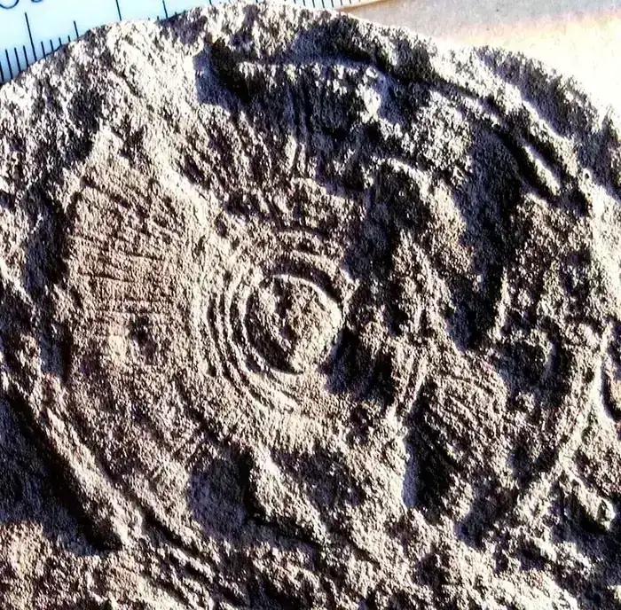

The organisms
The Ediacaran biota appeared after the Cryogenian glaciations and before the Cambrian explosion. The most famous is Dickinsonia, a flattened oval with rib-like segments, up to a metre across, with no mouth, gut, or obvious organs. Others include Charnia, frond-like and anchored to the sea floor, and Kimberella, which left scrape marks consistent with grazing.
Maps, diagrams and images


They are found worldwide, often in sandstone beds that record microbial mats, and they vanish from the record before the Cambrian.
The competing readings
Early animals. The mainstream view now, supported by cholesterol biomarkers preserved in Dickinsonia fossils (Bobrovskiy et al., 2018), which indicate animal-grade sterol synthesis. Kimberella's grazing traces and Ikaria's putative bilaterian features support it.
Vendobionts. Adolf Seilacher argued they were a separate kingdom of quilted, fluid-filled organisms with no modern descendants — an experiment in large size that failed.
Other options. Retallack proposed some were land-dwelling lichens; others have suggested giant protists or colonial organisms. Each has fossil evidence in favour and problems with it.
Agreed: they were large, soft-bodied, mostly sessile, and ecologically important — the first complex ecosystems with tiered structure.
Agreed: at least some were animals, or stem-group animals, based on biomarker chemistry.
Disputed: whether the whole assemblage is one clade, several, or a mix of animals and non-animals; and how much of the 'weirdness' is preservational.
The archive labels this live debate rather than documented because the flagship claim — 'these are the first animals' — is only partly established.
Why it is in the archive
Because the deep past is where the fringe and the real science overlap most confusingly: the same fossils appear in creationist timelines, in 'ancient alien' seed-life stories, and in serious palaeontology.
See the Ancient collection for the pseudo-historical uses of deep time.
Sources for this page
- Wikipedia, “Ediacaran biota” — taxa, preservation, interpretationsen.wikipedia.org
- Bobrovskiy et al. (2018), Science — sterols identify Dickinsonia as an animaldoi.org
- Droser & Gehling (2015), PNAS — the advent of animals, the Ediacaran viewdoi.org
- Retallack (2013), Nature — the case for Ediacaran life on landdoi.org
Open resources on this topic
- PapersOpen-access articles: DOAJ · PubMed Central · Internet Archive Scholar
- BooksPublic-domain and borrowable copies: Open Library · Project Gutenberg · Google Books · Internet Archive
More images
Cite this page
Momin, S. (2026). The Ediacaran Organisms. The Larger World Archive. https://drsamonline.github.io/LARGE_GLOBE/ediacaran.htmlMomin, Sohil. “The Ediacaran Organisms.” The Larger World Archive, 2026, https://drsamonline.github.io/LARGE_GLOBE/ediacaran.html.Momin, Sohil. “The Ediacaran Organisms.” The Larger World Archive, 2026. https://drsamonline.github.io/LARGE_GLOBE/ediacaran.html.@misc{the2026ediacaran,
author = {Momin, Sohil},
title = {The Ediacaran Organisms},
year = {2026},
howpublished = {The Larger World Archive},
url = {https://drsamonline.github.io/LARGE_GLOBE/ediacaran.html},
note = {Last reviewed 20 November 2026}
}Last reviewed 20 November 2026 · Corrections policy · this page is not peer reviewed